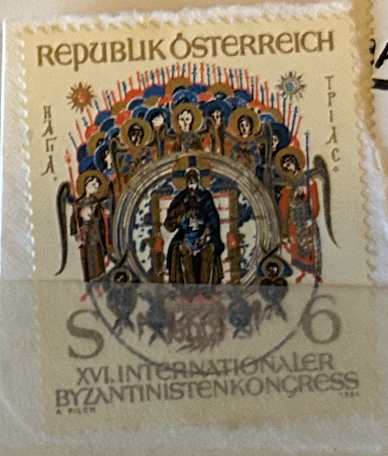
| SOURCE | TITLE| IMAGE MATCH | click to source page |
| eBay | Austria 1981, Intern congress Byzantine Studie VF MNH, Mi 1683 | eBay | 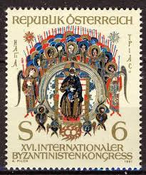 |
| Briefmarken-Versand-Welt | 1981 UNICHAL-Kongreß Wien 1981 - MaxiCard - Briefmarken-Versand-Welt, 1,50 € | 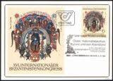 |
| bazar.sk | Predaj, inzercia - Bazar.sk, str. 695 | Bazar.sk | 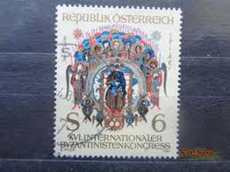 |
| GiBud | GiBud - Auksjoner på nett | 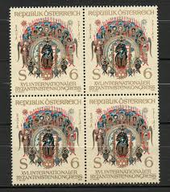 |
| Aukro | rakousko aršík - Battle of Kahlenberg near Vienna 1683, painting 1983 | Aukro | 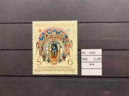 |
| eBay UK | Austria Stamps: 1980, 1981, Pictorial Year Sets: SG1887/9, 1891/1914; CV £34.50 | eBay UK | 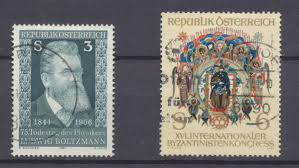 |
| eBay | Austria 1994 CHRISTMAS, BIRTH OF CHRIST BY ANTON WOLLENEK SC 1666 MNH | eBay | 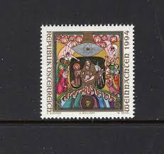 |
| eBay | Austria 1681,1682,1683, mint/MNH 1981 spec | eBay | 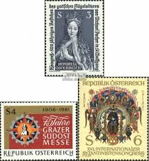 |
| Blogger.com | Philaquely Moi: 3D - Holographic Stamps - Update | 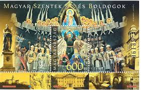 |
| Stamp Community Forum | Modern Industrial Art And Design - Page 7 - Stamp Community Forum | 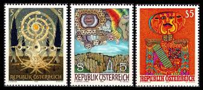 |
| Find Your Stamps Value | Value of english embroidery c.1320 stamps | 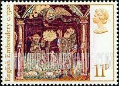 |
| YouTube | YouTube | 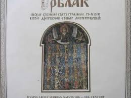 |
| The Global Retreat Company | Balancing our elements at Euphoria Retreat, Greece — The Global Retreat Company | 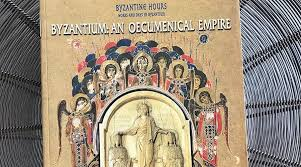 |
| Stamp Community Forum | Collecting By Engraver - Page 71 - Stamp Community Forum | 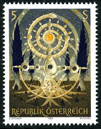 |
| What are the illuminations in the Sacratisima Ars Notoria like? | 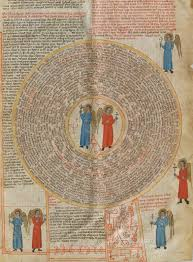 | |
| eBay | Austria Art Gustav Klimt Famous Painting Golden Woman stamp 1980 MNH | eBay | 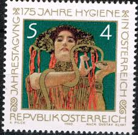 |
| Byzantium: The Empire of the New Rome by Cyril Mango [History](1980) : r/RedditReads | 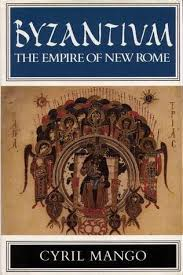 | |
| eBay | BERLIN 9N453 - Prussian Museum "12th Century Angel" (pb21329) | eBay | 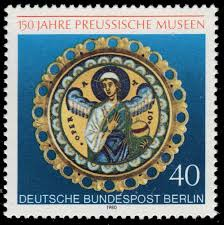 |
| eBay | Specimen, Austria Sc1481 Painting, Lebensbaum, Ernst Steiner | eBay | 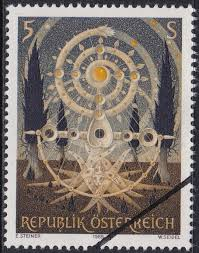 |
| eBay | Kyrgyzstan Stamps | eBay | 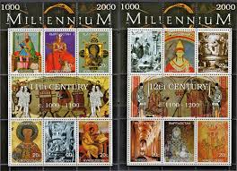 |
| Could the different paint colors on the Austrian 1989 stamps be considered a printing error? | 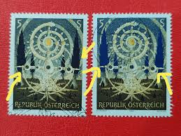 | |
| Villa Luginsland | Villa Luginsland | The Tucher family | 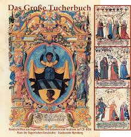 |
| Amazon.ca | FRD (FR.Germany) 1981 (Complete.Issue.) unmounted Mint/Never hinged ** MNH 1998 Hildegard of Bingen (Stamps for Collectors) Christianity, Printing & Stamping - Amazon Canada | 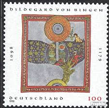 |
| lbdphilately.com | Products | 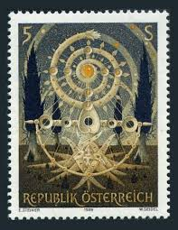 |
| AbeBooks | Shop Byzantine Books and Collectibles | AbeBooks: Argosy Book Store... | 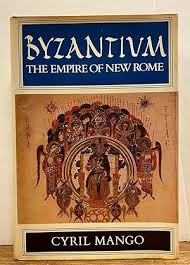 |
| Academia.edu | PDF) The Mosaicists' “Bible”. Reading the Visual Narratives in Byzantine Arabia and Palaestina | 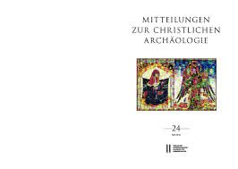 |
| Thomas von Loeper | ATM International – Thomas von Loeper | |
| Ars Notoria grants you Rapid learning abilities to sightread entire orchestral piece : r/classical_circlejerk | 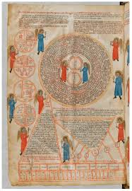 | |
| Alamy | The Imperial Eagle (Aquila Imperialis), Hans Burgkmair, 1507 Stock Photo - Alamy | 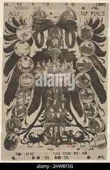 |
| eBay | HUNGARY 1977 ART TRASURES STRIP OF 4 STAMPS & S/S MNH | eBay | 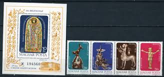 |
| danstopicals.com | Hrvoje Vukčić Hrvatinić ~ 1350-1416 | 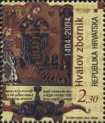 |
| Arpin Philately | Buy Canada #2152 - Northwest Coast Transformation Mask (2006) 89¢ | Arpin Philately | 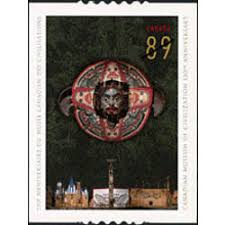 |
| eBay | Berlin Postage 1971-1980 Year of Issue Stamps for sale | eBay | 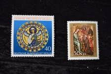 |
| Shane McAuley (shanemcauley90) - Profile | Pinterest | 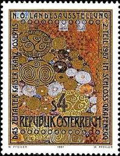 | |
| openArtBrowser | openArtBrowser | 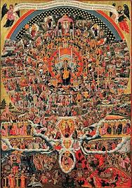 |
| Weiser Antiquarian | Imago Dei: The Byzantine Apologia for Icons. The A. W. Mellon Lectures in the Fine Arts, 1987 The National Gallery of Art, Washington D.C. / Bollingen Series XXXV 36; A Philosophical Dictionary | Byzantium, Icons | | 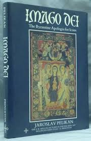 |
| Kupindo | dragoslav aksentijevic pavle srpske pesme 14 18 veka - Kupindo.com (28821189) | 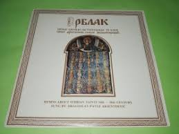 |
| Discogs | Anton Dvorak - Orchestre Philharmonique De Munich · Rudolf Albert – Symphonie N°5 En Mi Mineur Opus 95 "Du Nouveau Monde" – Vinyl (Flipback Sleeve, LP, Stereo), [r8532126] | Discogs | 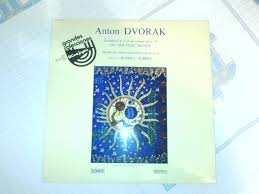 |
| eBay | 1993-95 Austria SC# 1601-1603 - Monasteries - 2 Different Stamps - Used | eBay | 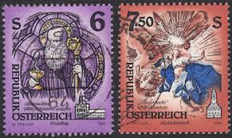 |
| Bloomsbury Publishing | Byzantine Silk on the Silk Roads: Journeys between East and West, Past and Present: Sarah E. Braddock Clarke: Bloomsbury Visual Arts - Bloomsbury | 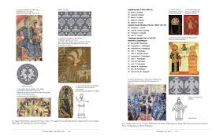 |
| Gwen (gwenynenn) - Profile | Pinterest | 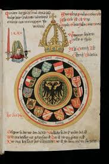 | |
| Wikipedia | Ars Notoria - Wikipedia | 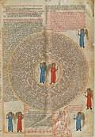 |
| Dreamstime.com | Operatio Stock Photos - Free & Royalty-Free Stock Photos from Dreamstime | 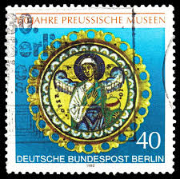 |
| HipStamp | Turkmenistan 1999 Pope Alexander III-Religion Millennium 12th.Cent.Shlt.IMPERF. | Europe - Turkmenistan, General Issue Stamp / HipStamp | 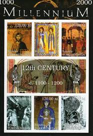 |
| windows.net | Lesson 0: Intro to Genesis | 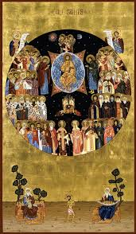 |
| eBay | BRD Michelnummer 2763 - 2764 Ecken mit Sonderstempel (europa:26846 ) | eBay | 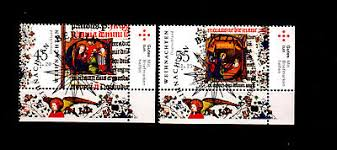 |
| ⚜️ 'Psalter (the 'De Lisle Psalter'; 'Arundel 83 II')' ( Arundel 83 f. 130v ) “The Cherub” - Artist: Attributed to the Madonna Master - Origin: England, S. E. (London?) - Date: | 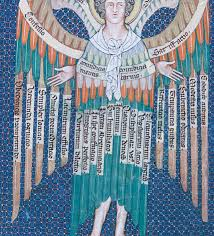 | |
| Bookbot | Europe in the Central Middle Ages 962-1154 - Christopher N. L. Brooke - bookbot.com | 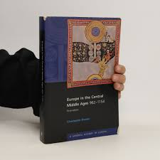 |
| eBay | Postal History FDC #725 Austria , Religious Art Stained Glass 1964 | eBay | 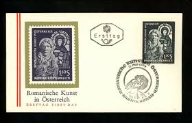 |
| Shutterstock | Angels Archangels Turning Around God Folio 에디토리얼 스톡 사진 - 스톡 이미지 | Shutterstock Editorial | 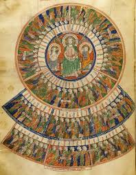 |
| Postcrossing | Pictorial Postmarks - Page 11 - Mail, stamps & postal info - Postcrossing Community | |
| Byzantium Beyond Byzantium | ICBS 2026 - ICBS 2026 | |
| Scribd | This Is Peru!: Activity 1: Proud of My Country! | PDF | Culture Of The Americas | Andes | |
| jumpingbean.ca | Austria Stamps 1996 Austria 1996 Block 12 Stamp - 1000 Years Austria Commemorative Issue MNH Never Hinged Collector Stamps | |
| Philatelie Liechtenstein | Noël - 1999 - 1980 - Philatelie Liechtenstein | |
| efilatelija.lt | Switzerland 1972 - Europa Stamps for sale | |
| Peterstamps | Ukraine. Peterstamps - Webshop | |
| All Saints composition of Archangels and Annunciation of Virgin Mary Byzantine Icons | Orthodox icons | ||
| Dreamstime.com | 122 Stamp Exhibitions Stock Photos - Free & Royalty-Free Stock Photos from Dreamstime |